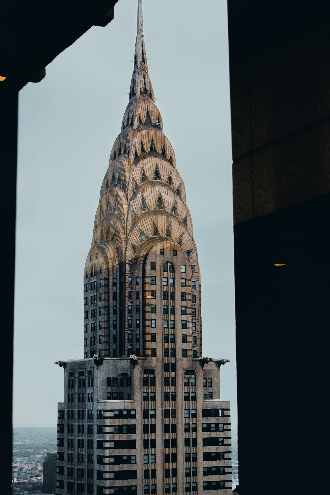
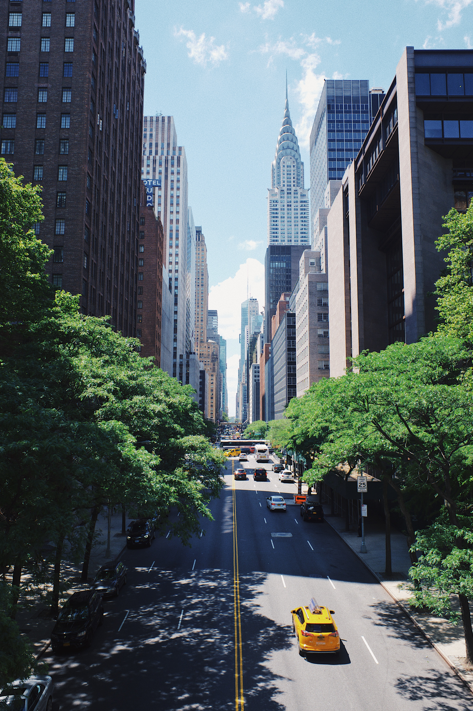
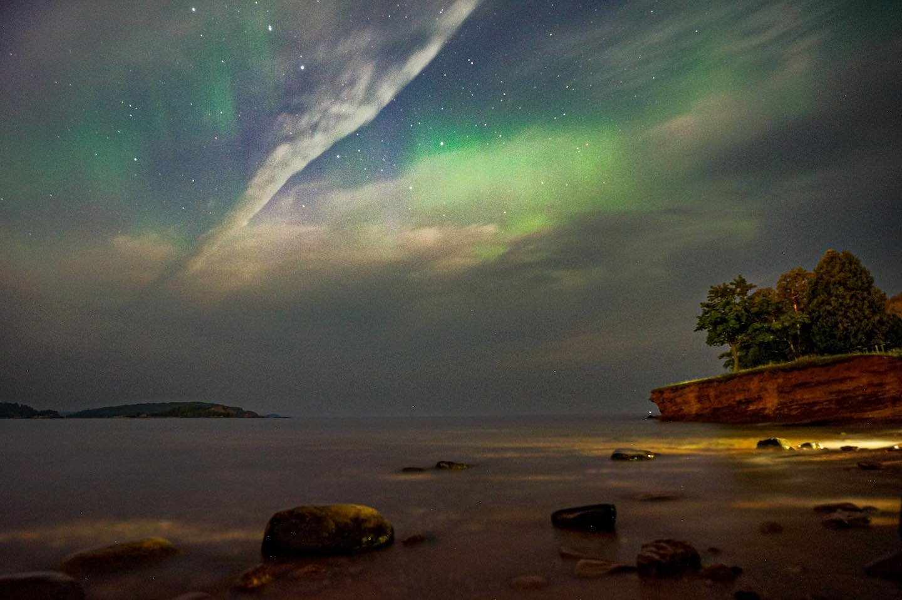
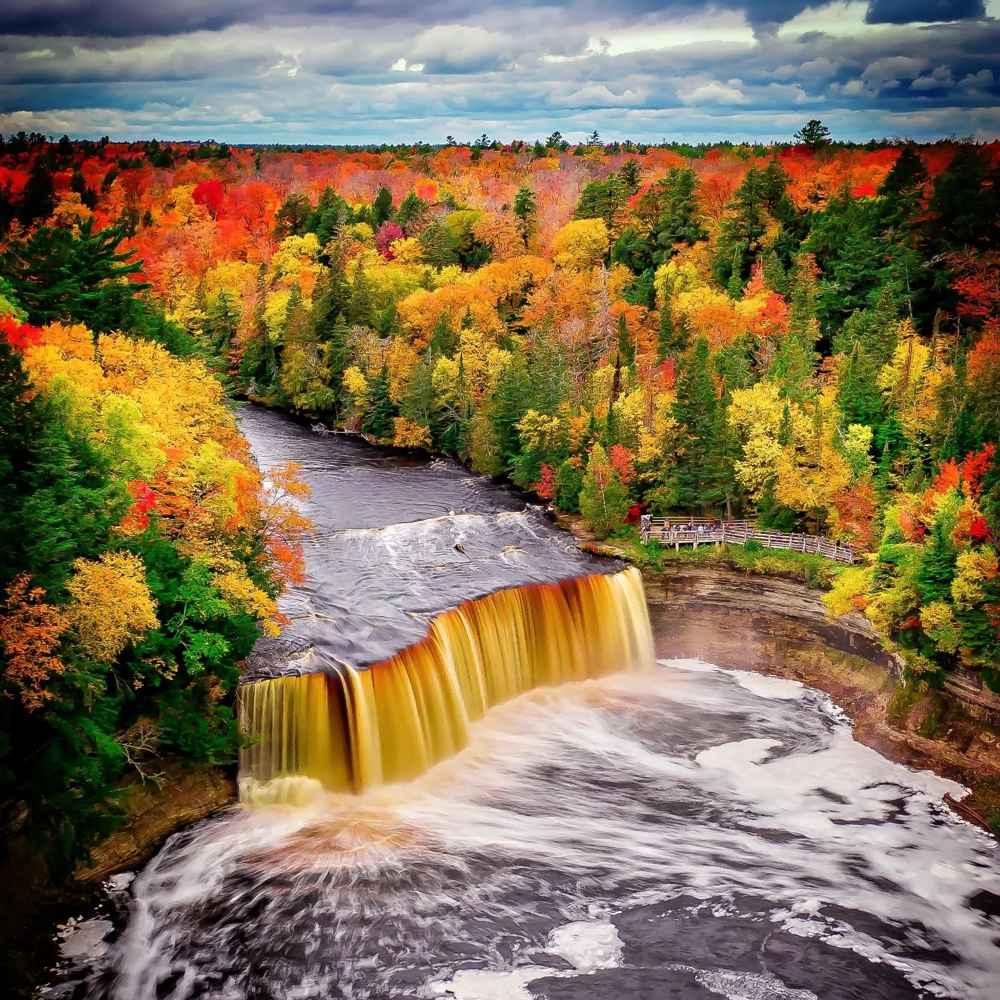
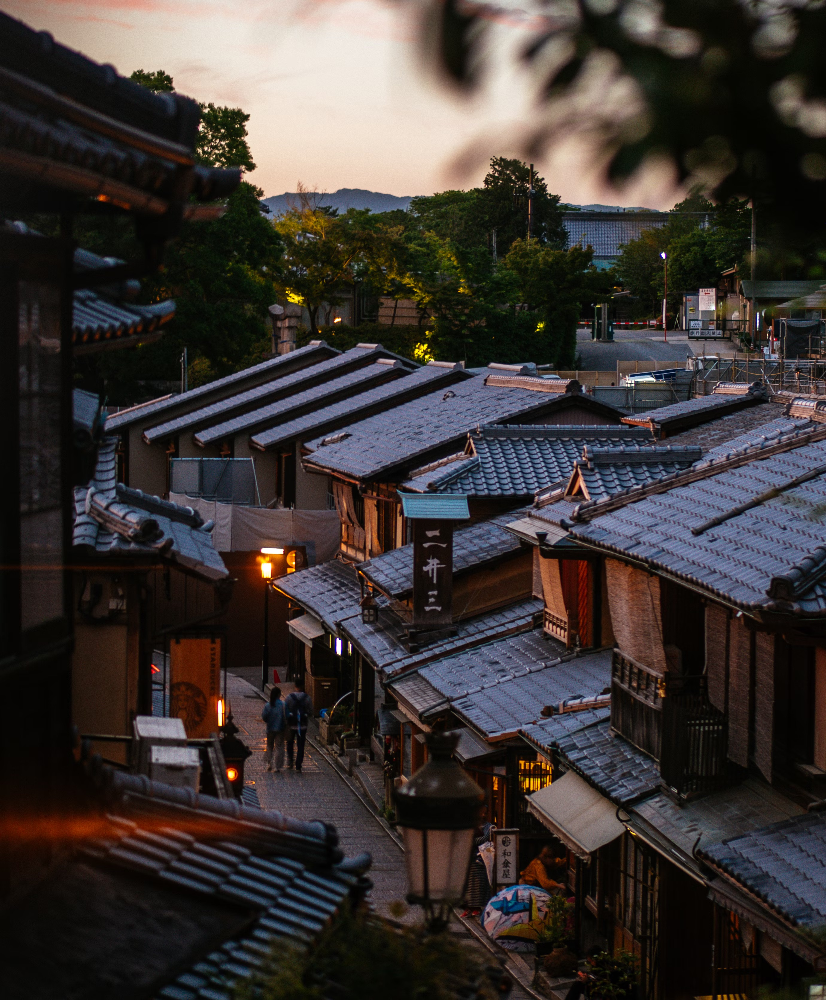

Yellowstone


Geographical Location: North America
Yellowstone is the first national park in the United States. It covers over 2.2 million acres, and provides an opportunity to see wildlife and explore geothermal areas. In fact, Yellowstone contains about half the world's active geysers.
These unique opportunities also bring out a lot of bad decisions among the tourists. Every year visitors injure themselves or the wildlife by getting close to the animals. You can see examples of people making bad decisions by visiting Yellowstone National Park: Invasion of the Idiots, Tourons of Yellowstone, or Cowboy State Daily.
Photo Gallery


The Chrysler Building
 Geographical Location: North America
Description created using generative AI: The Chrysler Building is an iconic skyscraper located in the heart of Manhattan, New York City. It is renowned for its distinctive Art Deco architecture and was once the tallest building in the world.
Photo Gallery
The Upper Peninsula of Michigan
 Geographical Location: North America
Description created using generative AI: Michigan's Upper Peninsula, often referred to simply as the UP, is a distinct region located in the northern part of the U.S. state of Michigan. It is geographically separated from the Lower Peninsula by the Straits of Mackinac, which connect Lake Huron and Lake Michigan.
Photo Gallery
Kyoto, Japan

Geographical Location: East Asia
Description created using generative AI: Kyoto is one of Japan's most historically and culturally significant cities, known for its well-preserved traditional architecture, beautiful gardens, historic temples and shrines, and rich cultural heritage.